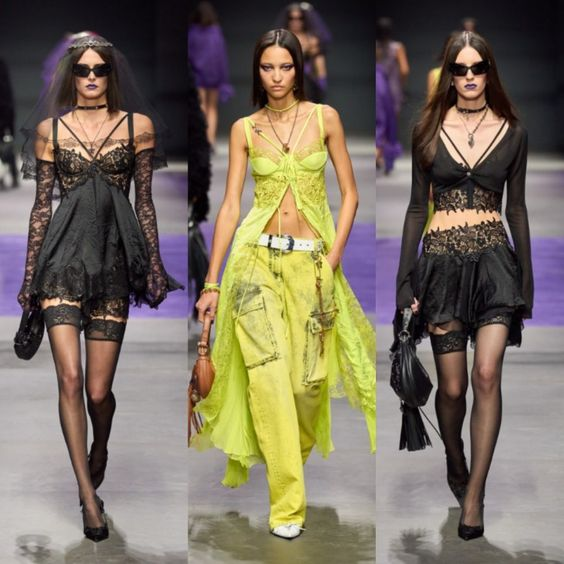

Versace
PRIMAVERA-VERANO 2023
«Siempre me han gustado las rebeldes. Una mujer segura de sí misma, inteligente y un poco diva.
Lleva prendas de piel, tachuelas y vaqueros deshilachados y tiene la actitud necesaria para combinarlos con gasa, punto y una tiara. Es una mujer fuerte y liberada; es preciosa y lo sabe. Es la diosa de la libertad».
- Donatella Versace

Esta coleccion es sobre la libertad de expresarse.
COLECCIÓN PRIMAVERA-VERANO 2023 PARA MUJER.
Presentamos una colección inspirada en una oscura diosa gótica. Los colores negro, púrpura y los toques fucsia son los que predominan en toda la colección y se combinan en looks glamurosos y sobre todo el Dark Gothic Goddess
Esta fue construida y diseñada por Dualipa junto a Donatella por lo cual tambien tenemos un estilo un poco diferente sin salirnos de Versace